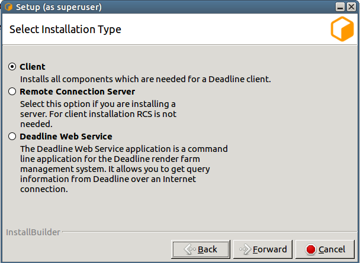
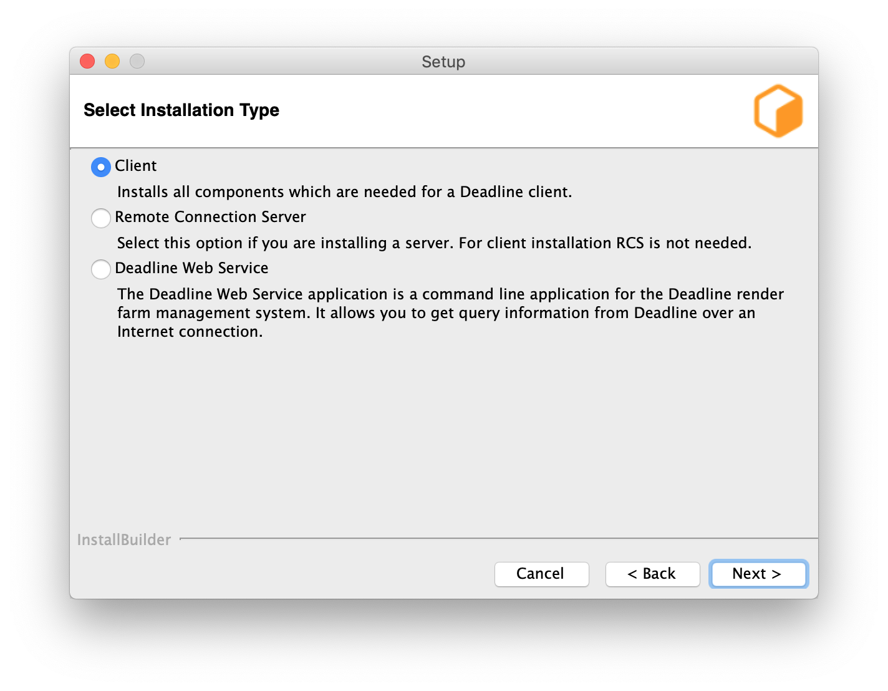
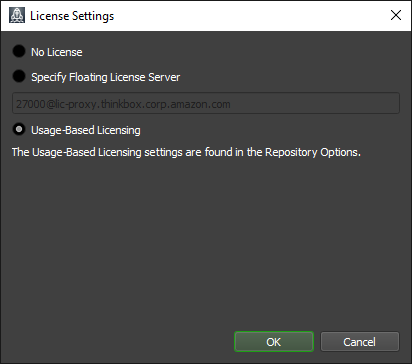

Client Installation (Quick)¶
Overview¶
Before proceeding with this installation, it is highly recommended to read through the Render Farm Considerations documentation, including the AWS Thinkbox Deadline Shared Responsibility Model. It outlines what AWS Thinkbox is responsible for and what customers are responsible for, and should be considered before installing and using Deadline.
This guide will walk you through the installation of the Client. At this point, you should already have the Database and Repository installed. If you do not, please see the Database and Repository Installation (Advanced) documentation for installation instructions.
Installing The Clients¶
The Client should be installed on your render nodes, workstations, and any other machines you wish to participate in submitting, rendering, or monitoring jobs.
Note
Starting with Deadline 10.1.23, Deadline and its components do not require a license. For older versions, the Workers are the only Client applications that require a license. Before you can configure the license for the Client, the license server must be running. See the Licensing documentation for more information.
If you choose to run Pulse, you need to install the Client on the chosen machine. Note that if you wish to run it on the same machine as the Database and/or Repository, you still have to install the Client on that machine.
There are Client installers for Windows, Linux, and macOS. To install the Client, simply run the appropriate installer for your operating system and follow the steps.
Windows¶
Start the installation process by double-clicking on the Windows Client Installer. The Windows Client installer also supports silent installations with additional options.


Choose an installation location and press Next to continue.
To increase security, by default files and directories under the client installation directory cannot be modified by anyone but root/administrators. However, auto-upgrade will fail if a non-root/administrators user is used to run Launcher. To resolve that, you can either set the proper permission to the user you intend to run Launcher or check this box to bypass the security limitation at your own risk. It is recommended you set up a dedicated user with the proper file permissions to run Deadline Launcher.

- You will be presented with a component selection screen. Typically, only the ‘General Client Files’ (mandatory) component is needed. Optional components are not part of the basic setup and are covered in their own sections:
Once you have selected any optional components you may wish to install, proceed to the next screen.

Choose a Connection Type (Direct or Remote).
Remote Connection is our recommended connection type as it includes more features and provides better separation between Deadline Database and Repository and Client machines.
The following settings are available for a Remote Connection:


Server Address: This is the address (IP/Hostname and Port) of the Remote Connection Server.
Client Certificate: This is the path to the SSL certificate required to connect to the Connection Server machine. If the Connection Server does not use authentication then this field must be left blank.

The following Launcher settings are available:
Launch Worker When Launcher Starts: If enabled, the Worker will launch whenever the Launcher starts.
Install Launcher As A Service: Enable this if you wish to install the Launcher as a service. The service must run under an account that has network access. In order for auto-upgrade to work, the account also needs the sufficient write permissions to access the Deadline client binary folder(
<Installation Directory>\bin). See the Windows Service documentation below for more information.
After configuring the Client and Launcher settings, press Next to continue with the installation.

From 10.1.16, it is recommended to block auto-upgrade on Deadline client machines to improve the security. When it is blocked, AutoUpdateOverride setting will be ignored. No auto-upgrade will be performed on this machine even if auto-upgrade is enabled via Monitor Repository Options.
Linux¶
Before you start, it is highly recommended to go through Validation of Linux Installers.
Note that on Linux, the Deadline applications have dependencies on some libraries that are installed with the lsb (Linux Standard Base) package. To ensure you have all the dependencies you need, we recommend installing the full lsb package. Note, CentOS 7 by default, no longer has the LSB package installed, so this must be installed. In addition, the libX11 and libXext must be installed on Linux for the Deadline applications to run on your user-based WORKSTATIONS, even if running them with the -nogui flag. They’re required for the Idle Detection feature to work on your WORKSTATIONS. This means, that X11 is NOT required on your headless RENDERNODES. To check if libX11 and libXext are installed, open a Terminal and run the following commands. If they are installed, then the path to the libraries will be printed out by these commands.
>>> ldconfig -p | grep libX11
>>> ldconfig -p | grep libXext
Addtionally, libQtCommercialCharts requires OpenGL on your workstations. Normally this is shipped with your graphics card drivers, but a software-only solution called Mesa exists if users wish to use Deadline without a graphics card.
>>> ldconfig -p | grep libMesaGL1 (libgl1-mesa-glx on Debian)
If any of these libraries are missing, then please contact your local system administrator to resolve this issue. Here is an example assuming you have root access, using YUM (RedHat/CentOS) to install them on your system:
>>> sudo -s
# WORKSTATIONS
>>> yum install redhat-lsb libX11 libXext
# old version
>>> yum install libMesaGL1
# new version
>>> yum install mesa-libGL mesa-libGLU
# RENDERNODES
>>> yum install redhat-lsb
On Amazon Linux 2 (AL2):
>>> sudo -s
# WORKSTATIONS / RENDERNODES
>>> yum install lsb
On Ubuntu:
>>> sudo -s
# WORKSTATIONS
>>> apt-get install lsb libx11-6 libxext-6 libgl1-mesa-6
# RENDERNODES
>>> apt-get install lsb
Start the installation process by double-clicking on the Linux Client Installer. The Linux Client installer also supports silent installations with additional options.
Choose an installation location and press Next to continue.
To increase security, by default files and directories under the client installation directory cannot be modified by anyone but root/administrators. However, auto-upgrade will fail if a non-root/administrators user is used to run Launcher. To resolve that, you can either set the proper permission to the user you intend to run Launcher or check this box to bypass the security limitation at your own risk. It is recommended you set up a dedicated user with the proper file permissions to run Deadline Launcher.
- You will be presented with a installation type selection screen. Client installation is the default option. Other options are covered in their own sections:
Once you have selected any optional components you may wish to install, proceed to the next screen.
Choose a Connection Type (Direct or Remote).
Remote Connection is our recommended connection type as it includes more features and provides better separation between Deadline Database and Repository and Client machines.
The following settings are available for a Remote Connection:
Server Address: This is the address (IP/Hostname and Port) of the remote Connection Server.
Client Certificate: This is the path to the SSL certificate required to connect to the Connection Server machine. If the Connection Server does not use authentication then this field must be left blank.
The following Launcher settings are available:
Launch Worker When Launcher Starts: If enabled, the Worker will launch whenever the Launcher launches.
Install Launcher As A Daemon: Enable this if you wish to install the Launcher as a daemon. You can also choose to run the daemon as a specific user. If you choose to run it as a non-root user, please make sure you give the user all the required file permissions to run it as a daemon. In order for auto-upgrade to work, the account also needs the sufficient write permissions to access the Deadline client binary/library folders(
<Installation Directory>/binand<Installation Directory>/lib) See the Linux Daemon documentation below for more information.
After configuring the Client and Launcher settings, press Next to continue with the installation.
From 10.1.16, it is recommended to block auto-upgrade on Deadline client machines to improve the security. When it is blocked, AutoUpdateOverride setting will be ignored. No auto-upgrade will be performed on this machine even if auto-upgrade is enabled via Monitor Repository Options.
macOS¶
Start the installation process by double-clicking on the Mac Client Installer. The Mac Client installer also supports silent installations with additional options. If you are installing on macOS Catalina, you may see a warning that the installer ‘can’t be opened because Apple cannot check it for malicious software’. This is because the installer has not been notarized by Apple. In this case you need to right-click the installer icon, and choose “Open” in the pop-up menu that appears.
Choose an installation location and press Next to continue.
To increase security, by default files and directories under the client installation directory cannot be modified by anyone but root/administrators. However, auto-upgrade will fail if a non-root/administrators user is used to run Launcher. To resolve that, you can either set the proper permission to the user you intend to run Launcher or check this box to bypass the security limitation at your own risk. It is recommended you set up a dedicated user with the proper file permissions to run Deadline Launcher.
- You will be presented with a component selection screen. Typically, only the ‘General Client Files’ (mandatory) component is needed. Optional components are not part of the basic setup and are covered in their own sections:
Once you have selected any optional components you may wish to install, proceed to the next screen.
Choose a Connection Type (Direct or Remote).
Remote Connection is our recommended connection type as it includes more features and provides better separation between Deadline Database and Repository and Client machines.
The following settings are available for a Remote Connection:
Server Address: This is the address (IP/Hostname and Port) of the remote Connection Server.
Client Certificate: This is the path to the SSL certificate required to connect to the Connection Server machine. If the Connection Server does not use authentication then this field must be left blank.
The following Launcher settings are available:
Launch Worker When Launcher Starts: If enabled, the Worker will launch whenever the Launcher launches.
Install Launcher As A Daemon: Enable this if you wish to install the Launcher as a daemon. You can also choose to run the daemon as a specific user. If you choose to run it as a non-root user, please make sure you give the user all the required file permissions to run it as a daemon. In order for auto-upgrade to work, the account also needs the sufficient write permissions to access the Deadline client binary folder(
<Installation Directory>/Resources). See the macOS Daemon documentation below for more information.
After configuring the Client and Launcher settings, press Next to continue with the installation.
From 10.1.16, it is recommended to block auto-upgrade on Deadline client machines to improve the security. When it is blocked, AutoUpdateOverride setting will be ignored. No auto-upgrade will be performed on this machine even if auto-upgrade is enabled via Monitor Repository Options.
Change Connection type / Repository¶
If you wish to change the Connection type / Repository after the installation, you can refer to Change Repository.
Installing as a Service¶
On Windows and Linux, you can choose to install the Launcher as a service or daemon during installation. There are a few things to keep in mind when running Deadline in this mode.
Windows Service¶
When running as a service on Windows, the Launcher will run without displaying its system tray icon. If the Worker or Pulse application is started through the Launcher while it is in this mode, they will also run without a user interface. Finally, the Launcher can still perform an auto-upgrade, but only when launching the Worker and Pulse applications (launching the Monitor, for example, will not invoke an upgrade).
Note that when running the Launcher as a service, the Worker or Pulse application will also run in a service context. Since services run in a different environment, and potentially under a different user profile than the one currently logged in, certain considerations need to be made.
First, the default user for a service has no access to network resources, so while Launcher service will run without any issues, neither the Worker nor Pulse applications will be able to access the Repository. To avoid network access issues, you must configure the service to run as a user with network privileges. Typical desktop users have this permission, but check with your system administrator to find which account is best for this application.
Another issue presented by the service context is that there is no access to the default set of mapped drives. Applications will either need to map drives for themselves, or make use of UNC paths. While Deadline supports Automatic Drive Mapping, the SMB protocol does not allow sharing a resource between two users on the same machine. This means that mapping of drives or accessing a resource with different credentials may fail when running as a service on a machine which already requires access to the Repository.
There is also an issue with hardware-based renderers. Starting with Windows Vista, services now run in a virtualized environment which prevents them from accessing hardware resources. Because the renderer will run in the context of a service, hardware-based renderers will typically fail to work.
To ensure Deadline’s Automatic Upgrade/Downgrade system works correctly; make sure the service account used to run Deadline Launcher has the ability to start and stop the service. This permission can be added to the service account by an Administrator user as follows:
setacl.exe \\computername\deadline<VERSION>launcherservice /service /grant <serviceaccount> /start_stop
Note
<VERSION> is the Deadline major version, such as: 10.
Linux Daemon¶
When installing the daemon, the Client installer creates the appropriate deadlinelauncherservice script in /etc/systemd/system.
When running as a daemon on Linux, the Launcher will run without displaying its system tray icon. If the Worker or Pulse application is started through the Launcher while it is in this mode, they will also run without a user interface. This is useful when running Deadline on a Linux machine that doesn’t have a Desktop environment.
Linux Resource Limits¶
UNIX-based operating systems impose a limit on the number of resources a process can use, and these limits can affect the number of open files used by a process. Each open network connection is tracked as an open file by UNIX-based operating systems, so the open file limit restricts the number of network connections that a process can have. For Linux processes, default limit is 1024. Deadline Launcher daemon’s limits for the number of open files will be increased to 200000.
You can adjust this limit by editing the LimitNOFILE value in /etc/systemd/system/deadline10launcher.service. Run systemctl daemon-reload and restart the service using systemctl restart deadline1-launcher for your changes to take effect.
macOS Daemon¶
When installing the daemon, the Client installer creates the appropriate com.thinkboxsoftware.deadlinelauncher.plist file in /Library/LaunchDaemons.
When running as a daemon on macOS, the Launcher will run without displaying its system tray icon. If the Worker or Pulse application is started through the Launcher while it is in this mode, they will also run without a user interface.
Client License Configuration (DEPRECATED)¶
Note
Starting with Deadline 10.1.23, Deadline and its components do not require a license. This section is left for operators of older versions of Deadline.
Before you can configure the license for the Client, the license server must be running. See the Licensing documentation for more information.
If you didn’t configure the license for the Client during installation (see above), there are a couple of ways to set the license for the Client. The quickest way is to use the right-click menu in the Launcher or the File menu in the Worker application to change the license server.
The other option is to set up Auto Configuration so that the Client automatically pulls the license server information.

{kind=link}
{kind=link}
{kind=link}
{kind=link}
{kind=link}
{kind=link}
{kind=link}
{kind=link}
{kind=link}
{kind=link}
{kind=link}
{kind=link}
{kind=link}
{kind=link}
{kind=link}
{kind=link}
{kind=link}